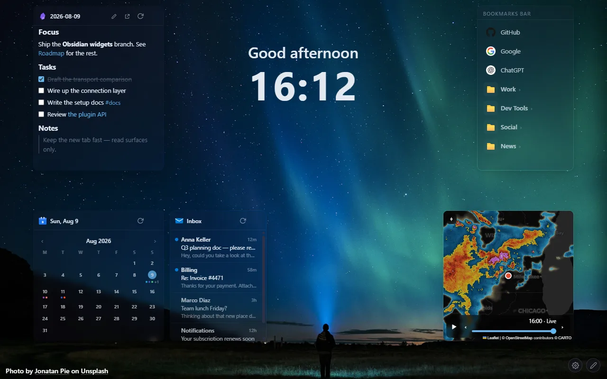
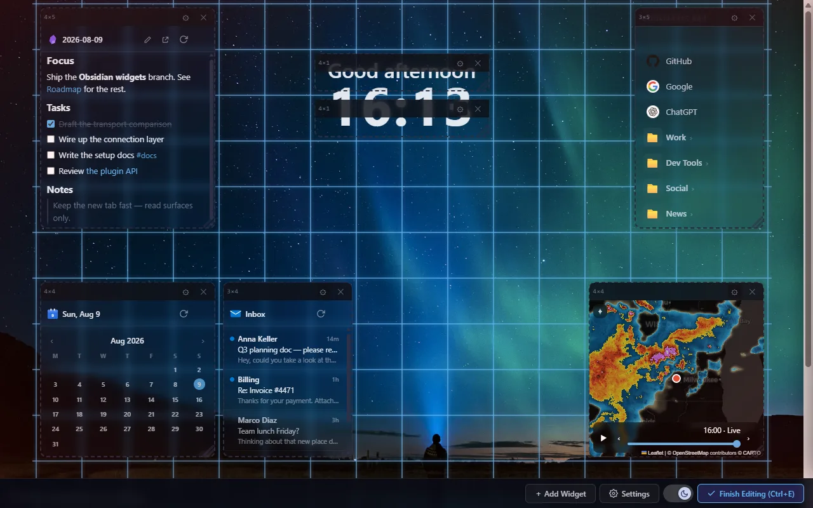
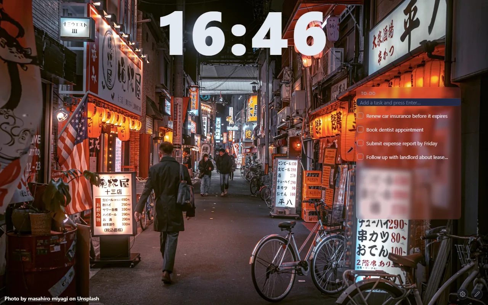
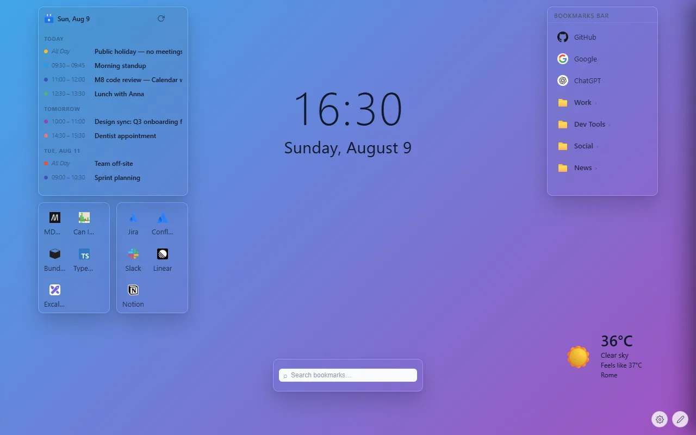
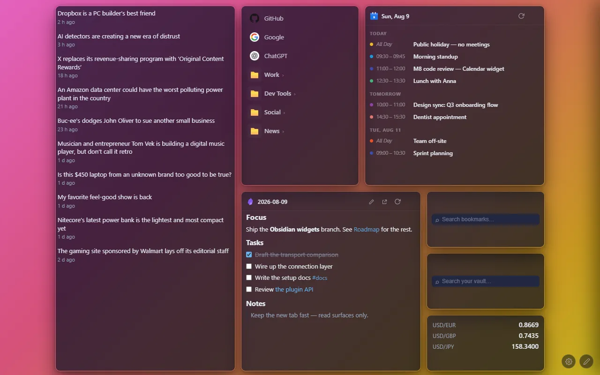

StartGrid is a free browser extension for Firefox and Chrome that replaces your browser's default new tab page with a customizable grid of widgets — a clock, weather, notes, bookmarks, live rain radar, and optional Google/Outlook Calendar, Outlook Mail, Google Tasks, and Obsidian widgets — set against a background of your choice.

What StartGrid does
Every time you open a new tab, StartGrid shows your chosen widgets and background instead of the browser's blank default page. You arrange which widgets appear and where; everything is configured locally in your browser.
Beautiful backgrounds
Solid colors, gradients, custom images, or live photo providers (Unsplash, Bing, NASA APOD, Wikimedia) — or an optional animated rain/snow effect over any background.
A freely arranged widget grid
Clock, weather, notes, bookmarks, rain radar, RSS feeds, to-do lists, currency rates, and more — drag, resize, and place each widget wherever you want on the grid.
Optional Calendar, Mail, and Tasks widgets
Google Calendar, Outlook Calendar, Outlook Mail, and Google Tasks previews at a glance — inactive until you explicitly connect an account.
Optional Obsidian widgets
Quick Capture, Daily Note, Pinned Note, Vault Search, and Random Note read and write your local vault directly — nothing leaves your device.
Privacy focused
No tracking, no unnecessary permissions, no background script, and open source under GPL-3.0 for full transparency. Your settings sync through your own browser account — nothing is uploaded to a StartGrid-run server.
Screenshots




Google and Microsoft Account access
The Calendar, Outlook Calendar, and Outlook Mail widgets are entirely optional and inactive until you explicitly click "Connect" in their settings panel. Connecting uses Google or Microsoft Sign-In and grants StartGrid read-only access to your calendar events or mail — StartGrid never sends, deletes, or modifies anything in your Google or Microsoft account. See the Privacy Policy for full details on what's accessed and how it's used.